這篇是對K-mean分群演算法的理解、概念程式碼範例、K-means影像filter應用程式碼
程式碼連結
K-means重點
- Unsupervise Learning，演算法會將資料分為K個群
- 隨機初始化K個中心點，依dataset中的data與這些中心點計算距離來比對
- 距離中心點最近的data點就是屬於此中心點的群集
- 被分為該群後的所有點，計算該中心點，並以此中心點為新的該群標準
K-means分群原理及如何運作
假設我們現在想要在空間中(此以2D平面說明)，將所有的data分為我們指定要的K個群集，那就是先隨機初始化K個座標( x1 ,y1), (x2,y2)…(xk, yk)，距離第一個點(x1, y1)相較於其他點更近的data，就會被屬於這個群，依此類推。然後被分群好的點，再計算該群的中心點，然後用此中心取代上一個標準中心點。
Simple Code Example
#以下範例會省略部分繪圖code
完整程式碼
一開始先初始化Dataset與隨機K=3個中心點 (▲, X, ■)
1
2
3
4
5
| K = 3
x = np.linspace(-1, 1)
y = x + np.random.normal(size=x.size)
center_x = np.random.uniform(low=x.min(), high=x.max(), size=3)
center_y = np.random.uniform(low=y.min(), high=y.max(), size=3)
|
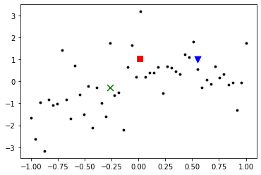
定義我們的K-means function
points : 上圖所有data點(小黑點)
center_points : 上圖的 (▲, X, ■)座標點
1
2
3
4
5
6
7
8
9
10
11
12
13
14
15
16
17
18
19
20
21
22
23
24
25
26
27
28
29
30
31
| def K_means(points, center_points, K):
x, y = points
center_x, center_y = center_points
K_distance = np.zeros((K, x.size))
for idx_p in range(x.size):
for idx_c in range(K):
dis = np.sqrt((center_x[idx_c] - x[idx_p])**2 + (center_y[idx_c] - y[idx_p])**2)
K_distance[idx_c, idx_p]=dis
_clusters = np.argmin(K_distance, axis=0)
clusters = [np.where(_clusters==i)[0] for i in range(K)]
new_center_x, new_center_y = np.zeros_like(center_x), np.zeros_like(center_y)
center_mv = []
for i in range(K):
new_center_x[i] = np.mean(x[clusters[i]])
new_center_y[i] = np.mean(y[clusters[i]])
center_mv.append(np.sqrt((new_center_x[i] - center_x[i])**2 + (new_center_y[i] - center_y[i])**2))
return new_center_x, new_center_y, sum(center_mv)
step = 10
center_x_his, center_y_his = [], []
new_center_x, new_center_y = center_x, center_y
for s in range(step):
center_x_his.append(new_center_x)
center_y_his.append(new_center_y)
new_center_x, new_center_y, mv = K_means(points=[x, y], center_points=[new_center_x, new_center_y], K=K)
print(f'Step {i} : moving distance {mv:.3f}')
if(mv < 0.05):
print(f'[Early stopped by moving distance : {mv:.3f}')
break
|
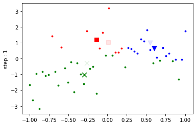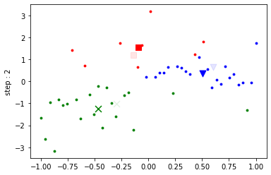 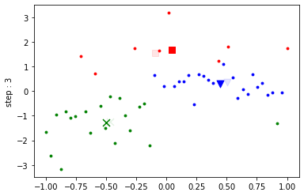 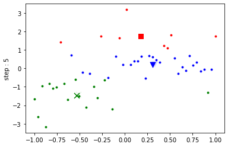 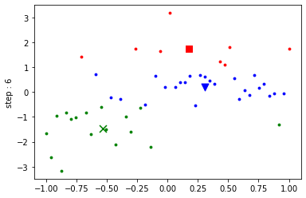
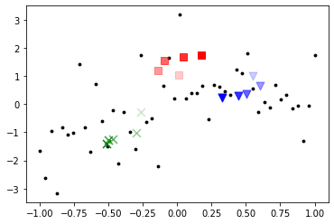
由上圖step1~step6，可以看到經過每個step，K-means將會找到新的群集，並將群集中心改變，就這樣慢慢接近最佳的分群解，直到中心點收斂為止。
最終收斂軌跡圖如上圖
Opencv K-means filter範例與原理說明
完整程式碼
首先讀取原圖
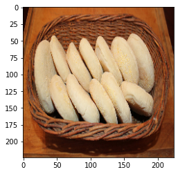
然後我們設K=2，終止條件為step10或者更新距離小於0.1可以得到如下圖結果，可以觀察到K=2時K-means很好的將籃子與背景分為咖啡色，中間的餅分為淡褐色
1
2
3
4
5
6
7
8
9
10
|
criteria = (cv2.TERM_CRITERIA_EPS + cv2.TERM_CRITERIA_MAX_ITER, 10, 0.1)
K = 2
_, classes, centers = cv2.kmeans(img_vector, K, None, criteria, 10, cv2.KMEANS_RANDOM_CENTERS)
centers = centers.astype(np.uint8)
img_segment = centers[classes]
img_segment = img_segment.reshape(img.shape)
classes_segment = classes.reshape(img.shape[0], img.shape[1])
|
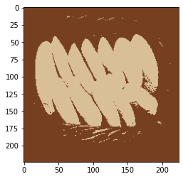
然後再設K=3，可以看到多了一個群將原圖黑色邊緣及背景分了出來
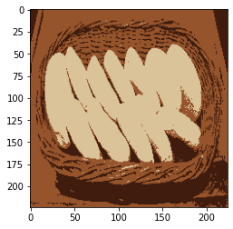
K-means image filter原理
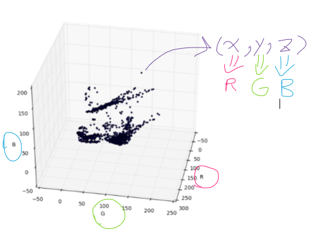
可以看到上面這張圖，代表3D空間中的dataset，其實我們的RGB影像，三維色彩空間中就是這樣表示
因此，我們就能利用K-means算法，將影像上每個pixel的(R, G, B)值，視為空間中的一個點，然後一樣隨機初始K個點來做K-means分群
經過K-means update完成後，可以得到K個(R,G,B)點，所有屬於某個K群的pixel全部填上該中心點的RGB值
這就是Image filter with K-means的原理跟過程